Trabajo 3 :
Clasificación de imágenes
Autores:
Hamza Lasri.
Diego Zuluaga
Castro.
Juan Rafael Ramírez
Builes.
Carlos Daniel
Sánchez Ramírez.
Introducción.
Con el avance de la
tecnología, la clasificación de imágenes ha surgido como un campo esencial en
el procesamiento de la información visual. La capacidad para extraer
información significativa de las imágenes tiene implicaciones profundas en
diversas áreas, desde el reconocimiento facial hasta la visión por computadora,
pasando por la vigilancia automatizada. Con la evolución constante de esta
disciplina, se han desarrollado técnicas de clasificación cada vez más
sofisticadas para abordar los desafíos planteados por la complejidad y
diversidad de las imágenes.
Entre los avances más
destacados, las redes neuronales convolucionales (CNN) han surgido como
herramientas poderosas para la clasificación de imágenes. Estas arquitecturas,
inspiradas en el funcionamiento del cerebro humano, han demostrado una eficacia
notable en el reconocimiento de patrones complejos. Su capacidad para aprender
características jerárquicas a partir de los datos ha abierto nuevas
perspectivas en la resolución de problemas complejos de clasificación,
especialmente aquellos relacionados con el reconocimiento de personas que
llevan gafas.
En el marco de este
informe técnico, exploraremos una aplicación específica de las CNN en el ámbito
de la clasificación de imágenes: la distinción entre individuos que llevan
gafas y aquellos que no las llevan. Esta tarea, en apariencia sencilla, presenta
desafíos interesantes debido a la variabilidad en las posturas, las personas y
la iluminación. Nuestro proyecto tiene como objetivo implementar una solución
robusta y precisa, aprovechando los últimos avances en redes neuronales
convolucionales, con el fin de contribuir significativamente a la resolución de
este problema específico.
Al examinar de cerca
los fundamentos teóricos de las CNN, así como los desafíos particulares
asociados con la clasificación de imágenes de personas con y sin gafas, este
informe proporcionará una comprensión profunda del contexto, los métodos
utilizados y los resultados obtenidos durante la implementación de nuestro
proyecto de clasificación de imágenes.
Presentación del
Conjunto de Datos "CMU Face Images"
Nombre del Conjunto de Datos: CMU Face Images Data Set
Fuente: Universidad de California en Irvine (UCI)
Descripción General:
El Conjunto de
Datos de Imágenes de Rostros de CMU, proveniente de la Universidad de
California en Irvine (UCI), constituye un recurso integral centrado en la
clasificación de la presencia o ausencia de gafas en los individuos. Compuesto
por 640 imágenes, este conjunto de datos ofrece una variedad de capturas que
representan a sujetos en diversas posiciones, lo que permite explorar la
diversidad de poses, centrándose principalmente en la
característica distintiva de la presencia de gafas.
Características Principales:
1.
Número total de imágenes: 640
2.
Variabilidad de Posiciones: Las imágenes
capturan a los sujetos en diversas posiciones, proporcionando una
representación exhaustiva de las expresiones faciales.
3.
Clasificación Gafas/No Gafas: El objetivo
principal de este conjunto de datos es clasificar la presencia o ausencia de
gafas en los individuos. Cada imagen está anotada en consecuencia.
4.
Organización en Subcarpetas: El conjunto de
datos está estructurado en subcarpetas, cada una agrupando imágenes de
diferentes individuos en diversas situaciones, con una atención especial a la
presencia o ausencia de gafas.
Uso Previsto:
El Conjunto de
Datos de Imágenes de Rostros de CMU está diseñado especialmente para el
desarrollo y la evaluación de modelos de clasificación de imágenes destinados a
detectar si un individuo lleva gafas o no. Las aplicaciones potenciales
incluyen el reconocimiento automatizado de accesorios faciales, la
caracterización de estilos personales y otros campos relacionados con el
análisis visual.
Descarga del Conjunto de Datos:
El conjunto de datos se encuentra disponible a
través del siguiente enlace:
https://archive.ics.uci.edu/ml/datasets/CMU+Face+Images
Cada subcarpeta
contiene imágenes de diferentes individuos, con anotaciones que indican la
presencia o ausencia de gafas, facilitando el acceso a datos específicos para
aplicaciones de clasificación.
Este conjunto de datos, centrado en la
característica distintiva de la presencia de gafas, proporciona un recurso
valioso para la investigación y el desarrollo de algoritmos de clasificación de
imágenes específicamente dedicados a esta tarea.
Metodología.
1.
Apertura de Imágenes y Etiquetado
2.
División del Conjunto de Datos en Datos de Entrenamiento, Validación y
Prueba
3.
Modelo Convolucional (CNN) - Arquitectura y Parámetros
4.
Primer Modelo CNN Básico
5.
Segundo Modelo CNN con Aumento de Datos
6.
Modelo Pre entrenado VGG16
Desarrollo.
1.
Apertura de
Imágenes y Etiquetado
En esta primera
fase de la metodología, navegamos a través del directorio "faces_4",
que contiene varios subdirectorios, cada uno de ellos con imágenes.
Inicialmente sin etiquetas, nuestro objetivo principal es llevar a cabo su
etiquetado.
Uso de OpenCV: OpenCV, o Open Source Computer Vision Library, resulta esencial en esta etapa. Esta biblioteca de código abierto, particularmente poderosa para el procesamiento de imágenes, se emplea aquí a través del módulo cv2 en Python. Nos permite leer y manipular datos visuales. El código recorre los subdirectorios, lee cada imagen con la función cv2.imread(), y luego las agrega a una lista dedicada.
Simultáneamente, las imágenes se etiquetan según la presencia de la cadena "sunglasses" en su nombre. Si se detecta esta cadena, la imagen se etiqueta con 1; de lo contrario, se etiqueta con 0. Se crean así dos listas distintas: una que almacena las imágenes y otra que almacena sus etiquetas.
Conversión a Arrays Numpy: Las listas resultantes se convierten en arrays NumPy, proporcionando estructuras de datos más adecuadas para el procesamiento posterior. Las dimensiones de estos arrays se muestran para comprender claramente el tamaño del conjunto de datos.
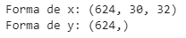
Figura 1: Estructura de las listas x e y
Al analizar el tamaño de estas listas y el de las
imágenes, observamos que las imágenes tienen dimensiones (30, 32) y que faltan
16 en el conjunto de datos inicial.
Uso de Matplotlib: Matplotlib es una biblioteca gráfica utilizada para crear visualizaciones en Python. Proporciona funciones para generar gráficos, diagramas e imágenes. En el contexto de nuestra metodología, empleamos Matplotlib para abrir una imagen específica, permitiendo así una observación visual de su contenido.
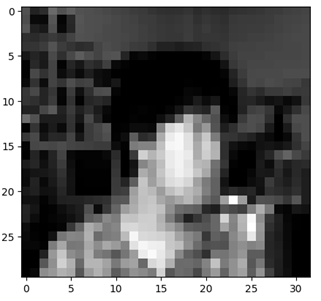
Figura 2: Visualización de una Imagen en el
Conjunto de Datos
2.
División del
Conjunto de Datos en Datos de Entrenamiento, Validación y Prueba
La división del conjunto de datos en tres conjuntos distintos: datos de entrenamiento, validación y prueba, cumple diferentes objetivos, contribuyendo así a la construcción sólida y la evaluación precisa de modelos de aprendizaje automático.
-
División Inicial (80% Entrenamiento, 20% Prueba):
La primera división entre datos de entrenamiento (80%) y prueba (20%) permite al modelo aprender a partir de una cantidad significativa de datos mientras conserva un conjunto no visto para evaluar su rendimiento final. Los 80% asignados al entrenamiento aseguran una base sólida para el aprendizaje del modelo, mientras que el 20% de prueba simula condiciones reales, permitiendo estimar su capacidad de generalización.
-
División Adicional de los Datos de Entrenamiento (80%
Entrenamiento, 20% Validación):
La subdivisión
ulterior de los datos de entrenamiento en conjuntos de entrenamiento (80%) y
validación (20%) responde a la necesidad de ajustar los parámetros del modelo
mientras se reserva una porción para la evaluación intermedia. Los 80% para el
entrenamiento aseguran una amplitud suficiente para el aprendizaje continuo,
mientras que el 20% de validación permite ajustar los hiperparámetros
e identificar posibles problemas de sobreajuste.
De esta manera, cada conjunto de datos desempeña un papel específico en el proceso de aprendizaje automático: los datos de entrenamiento alimentan el aprendizaje del modelo, los datos de validación guían el ajuste de los parámetros y los datos de prueba evalúan el rendimiento final en condiciones realistas. Esta aproximación garantiza una evaluación sólida y confiable del modelo en contextos diversos.
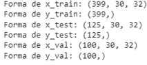
Figura 3 : Estructura de las listas x_train, y_train, x_test, y_test, x_val, y_val
3.
Modelo
Convolucional (CNN) - Arquitectura y Parámetros
Las redes neuronales convolucionales (CNN) representan un enfoque poderoso para la clasificación de imágenes, especialmente en el contexto de nuestro proyecto. En esta sección, examinaremos detalladamente la arquitectura de un modelo CNN, las diferentes capas que lo componen, así como las elecciones cruciales en términos de hiperparámetros, optimizadores, funciones de pérdida y funciones de activación.
A)
Arquitectura de un Modelo CNN
Un modelo CNN típico consta de capas convolucionales, capas de pooling y capas completamente conectadas. Las capas convolucionales detectan patrones en la imagen, las capas de pooling reducen las dimensiones, y las capas completamente conectadas realizan la clasificación.
B)
Capas del Modelo
- Capas Convolucionales: Estas capas aplican filtros para detectar características específicas en la imagen, permitiendo una jerarquía de representaciones.
- Capas de Pooling: Estas capas reducen las dimensiones espaciales de los mapas de características, preservando la información esencial.
- Capas Completamente Conectadas: Estas capas realizan la clasificación final integrando las características extraídas.
C)
Hiperparámetros a Elegir:
- Tamaño del Núcleo Convolucional: Determina el tamaño del filtro aplicado durante la convolución.
- Stride: Representa el número de píxeles que se desplazan el filtro durante la convolución.
- Número de Filtros: Indica la cantidad de filtros utilizados para extraer diferentes características.
- Tamaño de la Ventana de Pooling: Determina el tamaño de la región para la reducción dimensional.
D)
Optimizadores:
- Adam, SGD, RMSprop: Estos optimizadores ajustan los pesos del modelo para minimizar la función de pérdida durante el entrenamiento.
E)
Funciones de Pérdida:
- Entropía Cruzada Binaria (Binary Crossentropy): Utilizada para problemas de clasificación binaria.
- Entropía Cruzada Categórica (Categorical Crossentropy): Adecuada para problemas de clasificación multiclase.
F)
Funciones de Activación:
- ReLU (Rectified Linear Unit): Comúnmente utilizada para la activación de las capas convolucionales.
- Sigmoid o Softmax: Empleadas para la capa de salida, según la naturaleza del problema (binario o multiclase).
4.
Primer Modelo CNN Básico
En el contexto de nuestro proyecto de
clasificación de imágenes, nuestro objetivo es desarrollar un modelo Convolutional Neural Network (CNN) básico para diferenciar
entre las personas que llevan gafas y las que no las llevan. Los CNN son
particularmente adecuados para esta tarea, ya que son capaces de aprender
patrones complejos y jerárquicos a partir de datos visuales.
A) Primera capa
Conv2D con 32 filtros
Los filtros son pequeños núcleos que recorren la imagen para detectar patrones. La elección de 32 filtros permite que el modelo aprenda 32 características diferentes en la primera capa.
B) Activación ReLU
Se utiliza la función de activación ReLU (Rectified Linear Unit) para introducir no linealidad en el modelo. Reemplaza todas las valores negativos por cero. Esto ayuda al modelo a aprender representaciones complejas y superar la linealidad inherente de algunas operaciones.
C) Capa MaxPooling:
Las capas de MaxPooling reducen las dimensiones espaciales de los mapas de características, preservando la información más importante mientras se reduce la complejidad del modelo.
D) Segunda y
tercera capas Conv2D con 64 filtros
Estas capas agregan complejidad al modelo al aprender características más abstractas y complejas a partir de las representaciones intermedias de la primera capa.
E) Activación ReLU en cada capa convolutiva
ReLU se utiliza comúnmente porque ha demostrado ser eficaz al introducir no linealidad sin agregar complejidad excesiva.
F) Capa Flatten
Esta capa transforma la salida de las capas convolutivas en un vector plano. Prepara los datos para ser
utilizados por las capas completamente conectadas que siguen.
G) Capa Dense con
64 neuronas y activación ReLU
Esta capa completamente conectada aprende relaciones más complejas en los datos. Las 64 neuronas añaden capacidad al modelo para capturar patrones más sofisticados.
H) Capa Dense con 2
neuronas y activación sigmoid
La capa de salida tiene dos neuronas porque hay dos clases (con gafas o sin gafas). Se utiliza la activación sigmoid para obtener probabilidades independientes para cada clase.
I) Optimizer Adam
Adam es un optimizador popular que ajusta las tasas de aprendizaje de cada parámetro del modelo individualmente. Es eficiente y generalmente tiene un buen rendimiento en una amplia gama de tareas.
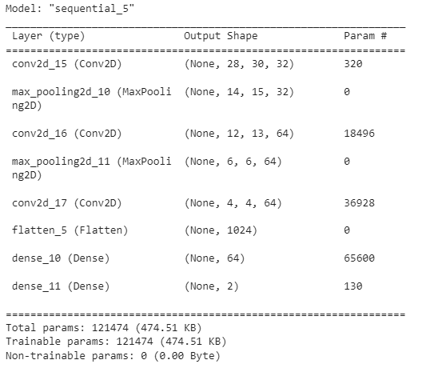
Figura 4 : Resumen de nuestro modelo
El modelo es de
tipo Sequential, compuesto por capas convolucionales
(Conv2D), capas de pooling (MaxPooling2D), una capa flatten y dos capas densas (Dense). Está destinado a la
clasificación binaria para diferenciar entre las personas que llevan gafas y
las que no.
El modelo tiene un total de 121,474 parámetros, todos entrenables, lo que significa que serán ajustados durante el entrenamiento para minimizar la función de pérdida.
J) Entrenamiento y Validación
En el marco de
nuestro proyecto, utilizamos TensorBoard como
herramienta de visualización para seguir la evolución del proceso de
entrenamiento de nuestro modelo.
TensorBoard ofrece una interfaz gráfica que permite analizar diversas métricas, la arquitectura del modelo y otros aspectos cruciales del proceso de aprendizaje automático.
En nuestro código, TensorBoard se emplea como "callback" durante el entrenamiento del modelo. Un "callback" es una función que se ejecuta en momentos específicos del proceso de entrenamiento. En este contexto, TensorBoard registra las métricas y otros datos relevantes en cada época de entrenamiento.
La línea `tensorboard = TensorBoard(log_dir="logs/{}".format(NAME))` configura el registro de TensorBoard, indicando la ubicación donde se almacenarán los datos de registro. En este caso, se crea un directorio "logs" con el nombre del modelo ("CNN_Básico").
La parte `history = model.fit(x_train, y_train, epochs=10, validation_data=(x_val, y_val), callbacks=[tensorboard])` corresponde al entrenamiento del modelo. `model.fit` ajusta los pesos del modelo según los datos de entrenamiento y utiliza los datos de validación para evaluar el rendimiento en cada época. El parámetro `callbacks` se utiliza para proporcionar las funciones de callback que se ejecutarán durante el entrenamiento, en este caso, TensorBoard.
El objeto `history` devuelto por `model.fit` contiene información sobre el proceso de entrenamiento, como la pérdida y las métricas en cada época. Este objeto se utilizará para visualizar y analizar el rendimiento del modelo a lo largo del tiempo.
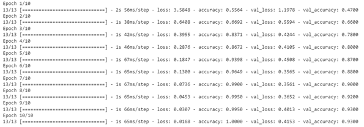
Figura 5 : Entrenamiento del modelo CNN básico.
A continuación, para iniciar el panel de control y visualizar la evolución de nuestra precisión (accuracy) y la función de pérdida a través de TensorBoard. Si está utilizando Google Colab, la interfaz se mostrará directamente. Sin embargo, si está utilizando otro entorno de programación, deberá abrir el enlace http://localhost:6006/ en su navegador para observar los gráficos generados por TensorBoard.
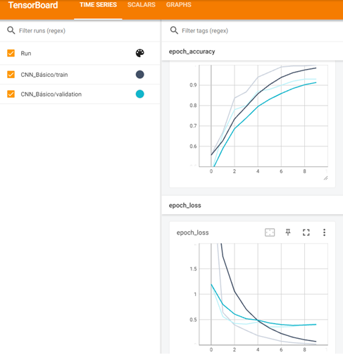
Figura 6: Evolución de la Precisión y
la Función de Pérdida para los Datos de Entrenamiento y Validación con TensorBoard
Las curvas de entrenamiento y validación de la precisión ilustran la evolución de la capacidad del modelo para clasificar correctamente los datos. Se observa un aumento en la precisión y una disminución en la pérdida a lo largo de las épocas, reflejando la mejora del rendimiento en los datos de entrenamiento y validación. Estas curvas son cruciales para evaluar la generalización del modelo y evitar el sobreajuste.
K) Test
Para evaluar el rendimiento de nuestro modelo en los datos de prueba, utilizaremos varias métricas de evaluación, entre ellas:
-
Precisión (Accuracy)
La precisión mide la capacidad del modelo para clasificar correctamente los ejemplos. Es un indicador global de la eficacia del modelo.
-
Informe de Clasificación (Classification Report)
El informe de clasificación proporciona métricas detalladas como precisión, recall y F1-score para cada clase. Esto nos brinda información específica sobre el rendimiento del modelo para cada categoría.
-
Matriz de Confusión (Confusion Matrix)
La matriz de confusión resume las predicciones correctas e incorrectas del modelo, distinguiendo verdaderos positivos, verdaderos negativos, falsos positivos y falsos negativos. Esto proporciona una comprensión detallada de los errores de clasificación.
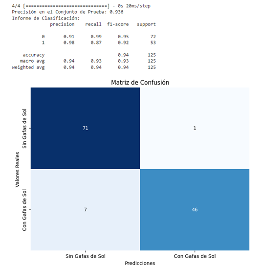
Figura 7: Evaluación de la Precisión,
el Informe de Clasificación y la Matriz de Confusión en los Datos de
Entrenamiento
El uso de estas métricas nos permitirá evaluar la robustez y precisión del modelo en los datos de prueba. Se analizará la precisión general, así como el rendimiento específico de cada clase, para obtener una visión completa de la capacidad de generalización de nuestro modelo.
- La precisión global del modelo en el conjunto de prueba es del 93,6%, lo que indica un rendimiento elevado en la clasificación de las imágenes.
- El informe de clasificación detalla la precisión, la sensibilidad (recall) y la puntuación F1 para cada clase. En particular, la clase "Sin Gafas" tiene una precisión excelente del 91%, mientras que la clase "Con Gafas" tiene una precisión aún mejor del 98%.
- La matriz de confusión muestra las predicciones correctas (diagonal principal) así como los errores del modelo. Hay 7 predicciones incorrectas de "Sin Gafas" a "Con Gafas" y 1 predicción incorrecta inversa.
5.
Segundo Modelo CNN con Aumento de Datos
La ampliación de
datos, o data augmentation en inglés, es una
técnica comúnmente utilizada en aprendizaje automático, especialmente en el
campo de visión por computadora y clasificación de imágenes. Esta técnica tiene
como objetivo aumentar el tamaño y la diversidad del conjunto de datos de
entrenamiento mediante la aplicación de diversas transformaciones a los datos
existentes. En lugar de recopilar nuevos datos, la ampliación de datos
aprovecha los datos existentes modificándolos de manera aleatoria o controlada.
El objetivo principal de la ampliación de datos es mejorar la generalización del modelo al exponerlo a una mayor variedad de escenarios y puntos de vista, simulando así condiciones del mundo real. Esto permite que el modelo aprenda características más robustas y aumente su capacidad para reconocer patrones relevantes en diferentes situaciones.
Las transformaciones comúnmente aplicadas durante la ampliación de datos incluyen rotación, volteo horizontal o vertical, zoom, desplazamiento y otras modificaciones similares. Estas transformaciones se aplican de manera aleatoria a cada lote de entrenamiento, proporcionando variedad adicional al modelo mientras se mantienen inalteradas las etiquetas de clase.
En resumen, la ampliación de datos ayuda a mitigar el sobreajuste del modelo a datos de entrenamiento específicos, mejorando así su capacidad para generalizar y rendir mejor en nuevos datos.
Este modelo es una
Red Neuronal Convolucional (CNN) diseñada para la clasificación binaria de
imágenes y será utilizada en conjunto con una técnica de aumento de datos,
donde se aplican diversas transformaciones a los datos existentes para aumentar
el tamaño y la diversidad del conjunto de entrenamiento. En este contexto,
algunas capas del modelo, especialmente las capas convolucionales y totalmente
conectadas, contienen más neuronas en comparación con un modelo estándar. Esto
ayuda al modelo a aprender características más complejas y a generalizar de
manera efectiva en una gama más amplia de escenarios.
A) Capas Convolutivas
- La primera capa convolutiva tiene 32 filtros con una función de activación ReLU. Esta capa busca aprender características básicas de bajo nivel en las imágenes.
- Después de cada capa convolutiva, se utiliza una capa de MaxPooling para reducir las dimensiones espaciales y preservar las características más importantes.
B) Capas Convolutivas Adicionales
- Se añaden dos capas convolutivas adicionales, cada una con un aumento en el número de filtros (64 y 128 respectivamente). A medida que se profundiza en el modelo, estas capas buscan aprender características más complejas y abstractas.
C) Capas
Totalmente Conectadas
- Después de aplanar los datos, se añade una capa densa (totalmente conectada) con 128 neuronas y una función de activación ReLU. Esta capa busca aprender relaciones más complejas entre las características extraídas por las capas convolutivas.
- La capa de salida tiene 2 neuronas con una activación sigmoide para realizar la clasificación binaria. Cada neurona representa una clase ("Sin gafas" o "Con gafas").
D) Compilación
del Modelo
- El modelo se compila utilizando el optimizador Adam con una tasa de aprendizaje de 0.001, y la función de pérdida se establece como 'sparse_categorical_crossentropy' para la clasificación binaria.
En resumen, este modelo CNN busca aprender y extraer patrones relevantes para clasificar imágenes en dos categorías relacionadas con el uso de gafas. El aumento en el número de filtros y neuronas en capas más profundas busca capturar características más complejas y mejorar la capacidad de generalización del modelo.
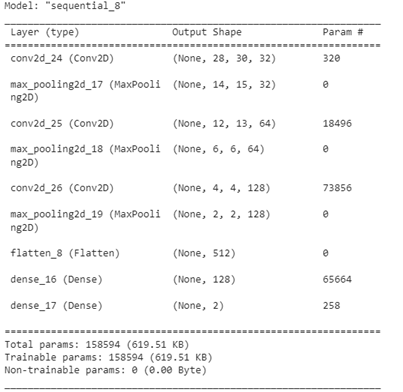
Figura 8 : Entrenamiento del modelo CNN Data Augmented
El modelo es de
tipo Sequential, compuesto por capas convolucionales
(Conv2D), capas de pooling (MaxPooling2D), una capa
de aplanado (Flatten) y dos capas densas (Dense).
Está destinado a la clasificación binaria para diferenciar entre personas que
llevan gafas y las que no.
El modelo tiene un total de 158,594 parámetros, todos entrenables, lo que significa que se ajustarán durante el entrenamiento para minimizar la función de pérdida.
En esta sección,
hemos implementado un proceso de aumento de datos utilizando el objeto ImageDataGenerator de TensorFlow.
A continuación, se presenta una descripción general del enfoque que hemos
utilizado:
E) Parámetros
de aumento
Se han definido varios parámetros de aumento para diversificar el conjunto de datos de entrenamiento. Esto incluye la rotación aleatoria hasta 40 grados, el desplazamiento horizontal y vertical aleatorio, la deformación, el zoom aleatorio, el volteo horizontal aleatorio y el modo de relleno de píxeles durante las transformaciones.
F) Normalización
Se realizó una normalización de los valores de píxeles entre 0 y 1 (`rescale=1./255`). Esto estandariza los valores de los píxeles, siendo una práctica común para facilitar la convergencia del modelo.
G) Creación
de generadores
Se han creado generadores de imágenes separados para los conjuntos de entrenamiento, validación y prueba. Estos generadores utilizan los parámetros de aumento definidos anteriormente. Los generadores son útiles porque generan lotes de imágenes aumentadas sobre la marcha, lo que ahorra memoria y permite entrenar el modelo con un conjunto más diverso.
H) Reorganización
de dimensiones
Se ajustaron las dimensiones de los conjuntos de entrenamiento, validación y prueba para que coincidan con el formato de entrada esperado por el modelo.
I) Creación
de generadores de imágenes
Utilizando los flujos `flow` de TensorFlow, se crearon flujos de imágenes aumentadas para los conjuntos de entrenamiento, validación y prueba. Estos flujos se utilizarán durante el entrenamiento del modelo. Estas etapas buscan aumentar el tamaño y la diversidad del conjunto de datos de entrenamiento, fortaleciendo así la capacidad del modelo para generalizar y rendir mejor en nuevos datos.
A continuación,
entrenamos el modelo CNN_Data_Augmented con datos
aumentados durante 50 épocas utilizando un generador de imágenes para el
conjunto de entrenamiento. Los registros del entrenamiento se almacenan en un
directorio específico llamado "CNN_Data_Augmented"
para visualizarlos más tarde con TensorBoard.
Finalmente, activamos TensorBoard y especificamos el
directorio de los registros para la visualización interactiva de las métricas
de entrenamiento.
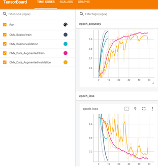
Figura 9: Evolución de la Precisión y
la Función de Pérdida para los Datos de Entrenamiento y Validación con TensorBoard
Les curvas de evolución de la precisión (accuracy) y de la pérdida (loss) de nuestro modelo, entrenado con aumento de datos, presentan características específicas. Se observa un progreso continuo de la precisión a lo largo de las épocas, indicando que el modelo mejora en la clasificación de los datos de entrenamiento. Al mismo tiempo, la pérdida disminuye de manera constante, lo que significa una reducción constante del error del modelo.
Sin embargo, en las curvas de validación se observan fluctuaciones. Estas variaciones, específicas de mi modelo, son normales y resultan de las transformaciones aleatorias aplicadas a los datos durante el aumento. A pesar de estas fluctuaciones, la observación de la tendencia general sigue siendo crucial. Una tendencia general al aumento de la precisión y a la disminución de la pérdida en los datos de validación indica que el modelo generaliza de manera efectiva, incluso teniendo en cuenta esta variabilidad.
J) Test
Para
evaluar el rendimiento de nuestro modelo en los datos de prueba, utilizaremos
varias métricas de evaluación, entre ellas: Precisión (Accuracy),
Informe de Clasificación (Classification Report), Matriz de Confusión (Confusion
Matrix)
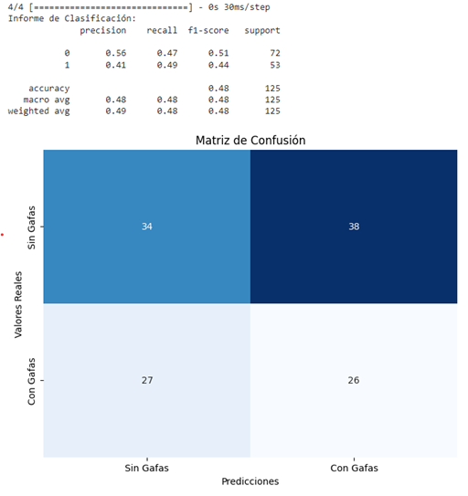
Figura 10: Evaluación de la Precisión,
el Informe de Clasificación y la Matriz de Confusión en los Datos de
Entrenamiento
Los resultados indican que el modelo tiene dificultades para generalizar correctamente. La precisión global es del 48%, lo que significa que clasificó correctamente aproximadamente la mitad de los ejemplos. Sin embargo, las métricas específicas muestran dificultades, con valores de precisión y recall relativamente bajos para ambas clases. La matriz de confusión revela un número significativo de falsos positivos y falsos negativos, indicando dificultades del modelo para discriminar entre las dos clases.
En conclusión, los resultados del modelo con Data Augmentation sugieren que esta técnica no ha sido beneficiosa para mejorar el rendimiento en este conjunto de datos específico. A pesar de la implementación de la Aumentación de Datos en nuestro modelo, el análisis de los resultados a través del informe de clasificación y la matriz de confusión sugiere que nuestro modelo no ha logrado aprovechar esta técnica de enriquecimiento de datos. En estas circunstancias, parece que el uso del modelo con datos aumentados no aporta beneficios significativos al rendimiento de nuestro modelo para la tarea específica que hemos abordado.
6.
Modelo Pre entrenado VGG16
Los modelos preentrenados en aprendizaje profundo son arquitecturas de
redes neuronales que han sido entrenadas en conjuntos de datos masivos para
resolver tareas complejas de clasificación de imágenes. Estos modelos han
aprendido a extraer automáticamente características jerárquicas de los datos,
lo que los hace eficaces para una variedad de tareas de visión por computadora.
La ventaja clave de los modelos preentrenados radica en su capacidad para generalizar a partir de características aprendidas en conjuntos de datos masivos, a menudo en el contexto de tareas generales de clasificación de imágenes. Esto permite a los usuarios beneficiarse de representaciones de alto nivel sin tener que entrenar un modelo desde cero, lo que puede ser intensivo en términos de recursos.
VGG16
El modelo VGG16, en
particular, es una arquitectura de red neuronal profunda conocida por su diseño
simple y su apilamiento profundo de capas de convolución. Fue desarrollado por
el grupo de geometría visual en la Universidad de Oxford. A pesar de su relativa
simplicidad en comparación con algunos modelos más recientes, VGG16 ha
demostrado un rendimiento excepcional en varios conjuntos de datos,
convirtiéndolo en una opción popular en la comunidad de aprendizaje profundo.
Para aprovechar al
máximo el potencial del modelo VGG16, es esencial tener en cuenta los
siguientes requisitos:
- Las imágenes deben tener una resolución mínima de 32x32 píxeles.
- Deben estar formateadas en modo RGB, lo que se traduce en tres dimensiones.
En consecuencia, se realizaron ajustes en nuestros datos para adaptarlos a estos requisitos y permitir un uso efectivo del modelo VGG16 en el contexto de nuestro proyecto.
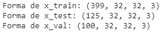
Figura 11 : Estructura de las nuevas listas x_train_resized_rgb, x_test _resized_rgb, x_val _resized_rgb
Se crea un modelo de clasificación binaria utilizando una arquitectura VGG16 preentrenada. Las capas del modelo VGG16 se mantienen fijas. Las capas fijas se refieren a capas cuyos pesos no se actualizan durante el entrenamiento del modelo. En el contexto de la utilización de la arquitectura VGG16 preentrenada, esta técnica permite conservar los conocimientos adquiridos durante el preentrenamiento en conjuntos de datos masivos, al tiempo que se enfoca en aprender características específicas para la nueva tarea. Esto contribuye a optimizar el rendimiento del modelo para la tarea actual, especialmente cuando el conjunto de datos es limitado. Luego, el modelo se compila con el optimizador Adam, una pérdida de `sparse_categorical_crossentropy` y una métrica de precisión.
Después, entrenamos nuestro modelo durante 50 épocas y evaluamos la evolución de la precisión junto con la progresión de la pérdida.
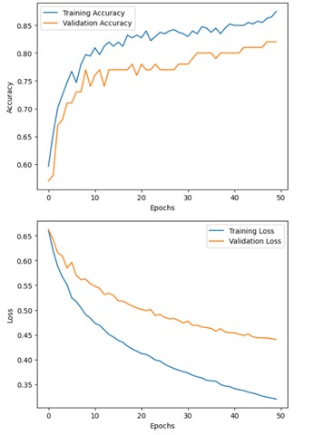
Figura 12 : Evolución de la Precisión y la Función
de Pérdida para los Datos de Entrenamiento y Validación con VGG16
Se observa un progreso continuo en la curva de precisión y una disminución en la curva de pérdida a lo largo de las épocas, indicando que el modelo se adapta eficazmente a nuestros datos de entrenamiento y comete cada vez menos errores.
A continuación, evaluamos el rendimiento de nuestro modelo en los datos de prueba para evaluar su robustez frente a nuevos datos. Para ello, utilizamos la precisión, el informe de clasificación y la matriz de confusión.
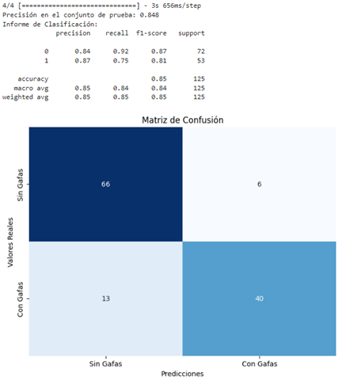
Figura 13 : Evaluación de la Precisión, el
Informe de Clasificación y la Matriz de Confusión en los Datos de Entrenamiento
con VGG16
- La precisión general del modelo en el conjunto de pruebas es del 85 %, demostrando un rendimiento sólido en la clasificación de imágenes.
- El informe de clasificación proporciona detalles sobre la precisión, la sensibilidad (recall) y la puntuación F1 para cada clase. En particular, la clase "Sin Gafas" muestra una precisión del 84 %, mientras que la clase "Con Gafas" alcanza una precisión del 87 %.
- La matriz de confusión ilustra las predicciones correctas (diagonal principal) y los errores del modelo. Se observan 6 errores de predicción de "Sin Gafas" a "Con Gafas" y 13 errores inversos.
Conclusión
Para concluir, nuestro estudio de clasificación de imágenes del conjunto de datos CMU Face Image involucró el uso de tres redes neuronales convolucionales (CNN). El primer modelo, un CNN básico, resultó ser el más efectivo, mostrando resultados excepcionales en todas las métricas del classification_report, así como en la matriz de confusión.
En cambio, el segundo modelo, un CNN con aumento de datos, mostró dificultades para adaptarse a los datos de entrenamiento modificados, lo que se tradujo en un rendimiento insatisfactorio en los datos de prueba, como se indica en el classification_report y la matriz de confusión.
Posteriormente, exploramos un tercer modelo CNN, basado en una arquitectura preentrenada, en este caso, VGG16. Este modelo presentó resultados alentadores en los datos de prueba, demostrando buenas actuaciones tanto en el classification_report como en la matriz de confusión.
Sin embargo, si se debe elegir un modelo para retener, el CNN básico se destaca con una precisión global del 93,6 % y un margen de error bajo en la matriz de confusión. Por lo tanto, el modelo CNN básico resulta ser la mejor opción para nuestra tarea de clasificación de imágenes.
Referencias
Robert, J. (2023, 9 noviembre). Convolutional Neural Network : tout ce quil y a à savoir. Formation Data Science | DataScientest.com. https://datascientest.com/convolutional-neural-network
Keldenich, T. (2023, 2 enero).
Data augmentation, Améliorer rapidement
son modèle de deep learning. Inside Machine Learning.
https://inside-machinelearning.com/data-augmentation-ameliorer-rapidement-son-modele-de-deep-learning/
Hugo Andreade (2021, Enero). Descripción del funcionamiento de una red neuronal convolucional (CNN). https://www.researchgate.net/figure/Figura-1-Descripcion-del-funcionamiento-de-una-red-neuronal-convolucional-CNN-10_fig1_348825166
Cayla, B. (2022, 6 agosto). VGG et Transfer
learning. datacorner par Benoit Cayla. https://datacorner.fr/vgg-transfer-learning/
StackOverflow (2019, 7 diciembre).
Python reshape list to Ndim Array. (s. f.). Stack
Overflow. https://stackoverflow.com/questions/35432378/python-reshape-list-to-ndim-array
OpenClassrooms. (2022, 8 julio).
Apprenez à construire un CNN et gagnez du temps avec le
Transfer Learning. https://openclassrooms.com/fr/courses/4470531-classez-et-segmentez-des-donnees-visuelles/5088816-apprenez-a-construire-un-cnn-et-gagnez-du-temps-avec-le-transfer-learning
Keldenich, T. (2023b, enero
2). Data augmentation, Améliorer rapidement
son modèle de deep learning. Inside Machine Learning.
https://inside-machinelearning.com/data-augmentation-ameliorer-rapidement-son-modele-de-deep-learning/
Elleuch, K. (2023, 25 abril). Augmentation dimages pour améliorer les modèles Machine learning P1. INVIVOO. https://www.invivoo.com/augmentation-images-modeles-machine-learning-partie-1/
James McDermott (s.f.). Hands-on transfer learning with KERAS and the VGG16 model. https://www.learndatasci.com/tutorials/hands-on-transfer-learning-keras/